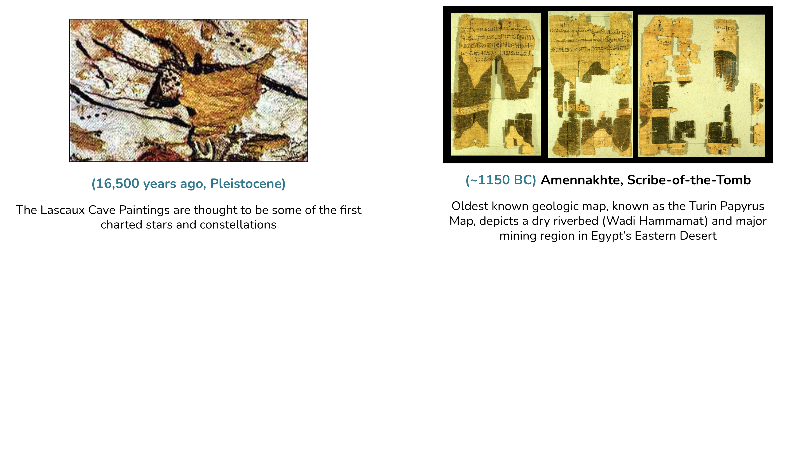
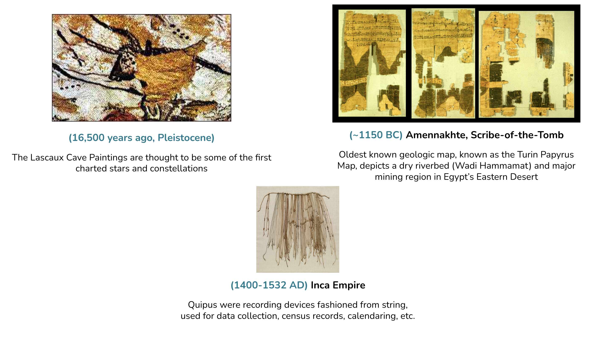
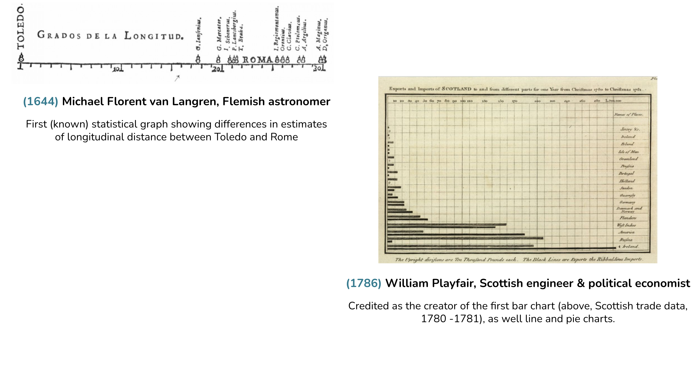
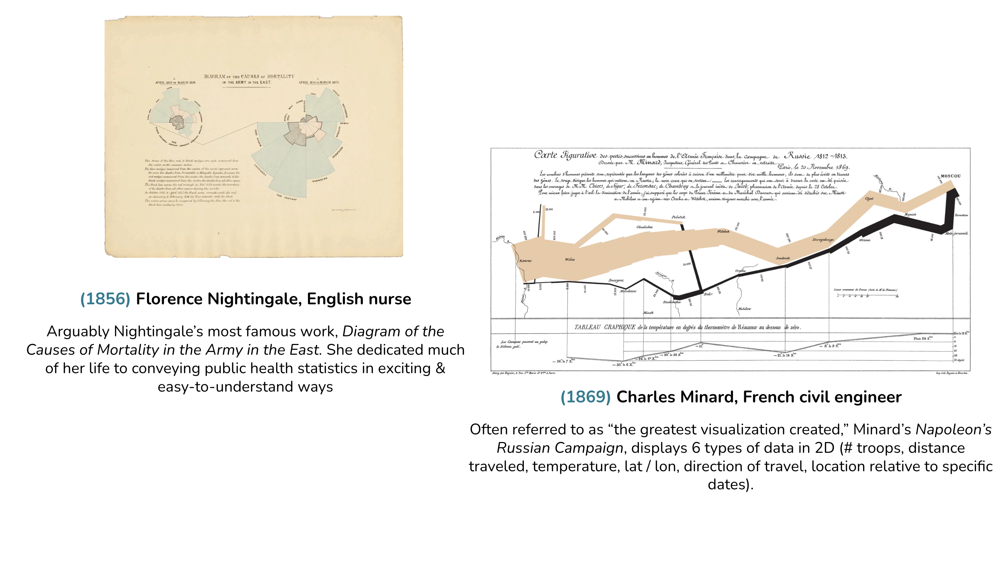
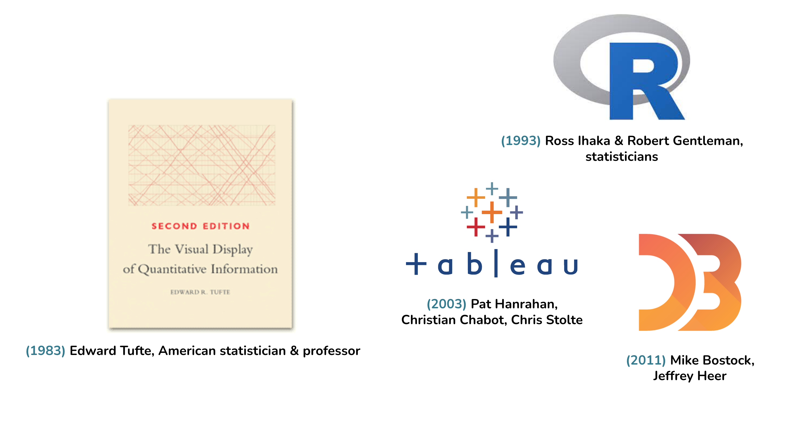

EDS 240: Lecture 1.2
Data visualization: an intro
Week 1 | January 8th , 2024
What is data visualization?
“…the practice of designing and creating easy-to-communicate and easy-to-understand graphic or visual representations of a large amount of complex quantitative and qualitative data and information with the help of static, dynamic or interactive visual items.”
What is data visualization?
“any graphical representation of information and data”
“part art and part science”
History of data visualization
Note: this is by no means a comprehensive history of the visual representation of information!
Lascaux Caves in the southwest of France; Pleiades star cluster (seven sisters) also found on the cave walls
History of data visualization
Note: this is by no means a comprehensive history of the visual representation of information!

Turin Papyrus Map, generally considered the oldest surviving map of topographical interest in the ancient world; was prepared for Ramses IV’s quarrying expedition to the Wadi Hammamat; the expedition purpose was to obtain blocks of stone for building statues of the king
History of data visualization
Note: this is by no means a comprehensive history of the visual representation of information!

History of data visualization
Note: this is by no means a comprehensive history of the visual representation of information!
van Langren was a dutch mathematician / astronomer; served as royal mathematician to King Phillip IV of Spain; worked on one of the most significant problems of his time (accurate determination of longitude between Toledo & Rome, particularly navigation by sea); graph shows all available estimates in distance (inaccuracies resulted in many shipwrecks)
History of data visualization
Note: this is by no means a comprehensive history of the visual representation of information!

History of data visualization
Note: this is by no means a comprehensive history of the visual representation of information!
Willard map maker & founder of first school for women’s higher education in the US; Temple of Time uses the architecture as a metaphor for history; foreground = present; columns represent centuries; she believed that facts must be connected to one another to be meaningful and that they will they be most easily retained if presented visually
History of data visualization
Note: this is by no means a comprehensive history of the visual representation of information!
Nightingale was an English wartime nurse; campaigned to improve sanitary conditions of military hospitals; collected data and created data viz; used color to emphasize particular aspects; famous “polar-area” viz shows the causes of mortality in the military hospital > deaths from preventable diseases (blue) outnumbered combat fatalities (red) in 1854 & early 1855; the changes she put in place greatly reduced those deaths by April 1855 (see here )
History of data visualization
Note: this is by no means a comprehensive history of the visual representation of information!

History of data visualization
Note: this is by no means a comprehensive history of the visual representation of information!
WEB DuBois was an African American writer, scholar and activist; first African American to earn a PhD from Harvard University; helped found the National Association for the Advancement of Colored People (NAACP).
History of data visualization
Note: this is by no means a comprehensive history of the visual representation of information!
Tufte: statistician & professor emeritus at Yale; nobably famous for his books on information design; pioneer in the field of data viz; this book is a classic on statistical graphics
History of data visualization
Note: this is by no means a comprehensive history of the visual representation of information!

R is a programming language for statistical computing and graphics
Tableau is a interactive data visualization software
D3.js is a JavaScript library for producing dynamic, interactive data visualizations in web browsers
Why do we visualize data?
Spend the next few minutes discussing with your Learning Partners, and if possible, pull up some example visualizations that demonstrate your thoughts / discussion points
. . . to answer questions / derive insights
Fig Caption: Unusual climate anomalies in 2023 (the red line, which appears bold in print). Sea ice extent (a, b), temperatures (c–e), and area burned in Canada (f) are presently far outside their historical ranges. These anomalies may be due to both climate change and other factors. Sources and additional details about each variable are provided in supplemental file S1. Each line corresponds to a different year, with darker gray representing later years.
A nice Twitter thread on key takeaways from the above paper
. . . to explore & generate new questions
“Exploratory data analysis (EDA) is not a formal process with a strict set of rules. More than anything, EDS is a state of mind…you should feel free to investigate every idea that occurs to you. Some of these ideas will pan out, and some will be dead ends. As your exploration continues, you will hone in on a few particularly productive insights that you’ll eventually write-up and communicate to others.”
-Hadley Wickham, author of R for Data Science
ggplot (diamonds, aes (x = carat)) + geom_histogram (binwidth = 0.5 )
ggplot (mpg, aes (x = fct_reorder (class, hwy, median), y = hwy)) + geom_boxplot ()
ggplot (diamonds, aes (x = price, y = after_stat (density))) + geom_freqpoly (aes (color = cut), binwidth = 500 , linewidth = 0.75 )
. . . to identify trends
Same summary statistics, different distributions!
. . . to prompt discussion
. . . to prompt discussion
. . . to create art / tell a story
Patchwork Kingdoms , by Nadieh Bremer portraying the “digital divide” in schools across the world
a data & generative art charity collection for the Giga Connect project of UNICEF which aims to connect all of the schools in the world to the internet.
a dataset of 1 million schools and for ±280,000 of those they know if those schools are connected to the internet
took this data about the schools, split it into 1000 subsets, and turned each school into a tiny square
upright kingdoms are schools that are already connected to the internet, while those in the hidden / upside down kingdoms are not. Each of the 1000 pieces is thereby showing the “digital divide” that still exists in our world, and the funds from this sale will help to bring more schools from the hidden to the upright kingdom.
. . . to create art / tell a story
To enlarge, Right click > Open Image in New Tab
Vertices of Visualization
Why R for data viz?
I’m most comfortable in R
great ecosystem of data wrangling & visualization packages (inc. a massive and growing collection of {ggplot2} extensions)
amazing online learning communities
data viz fundamentals apply no matter the language / tool
~ This is the end of Lesson 2 (of 3) ~